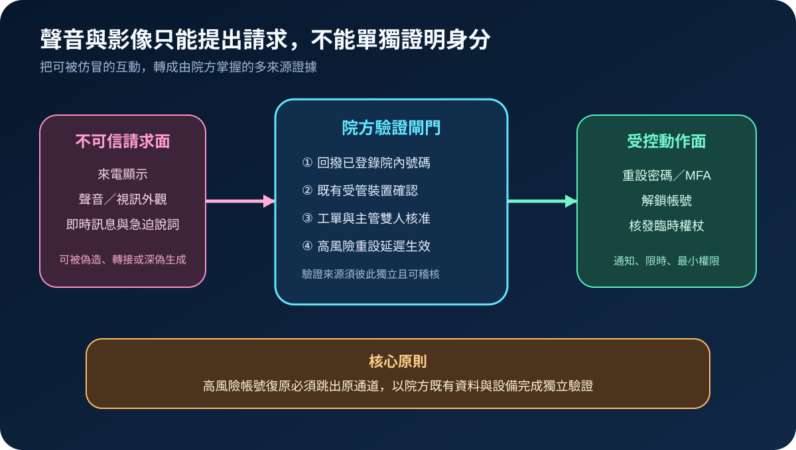
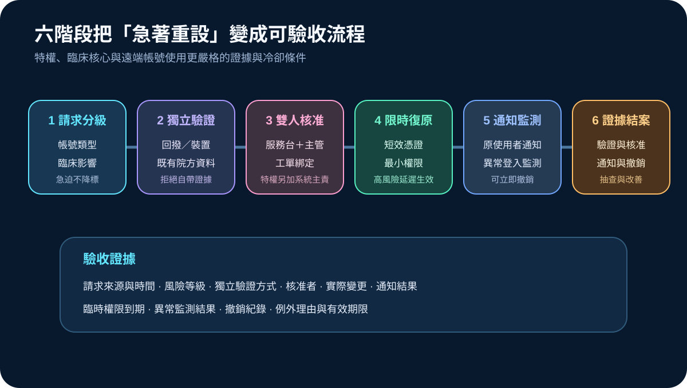
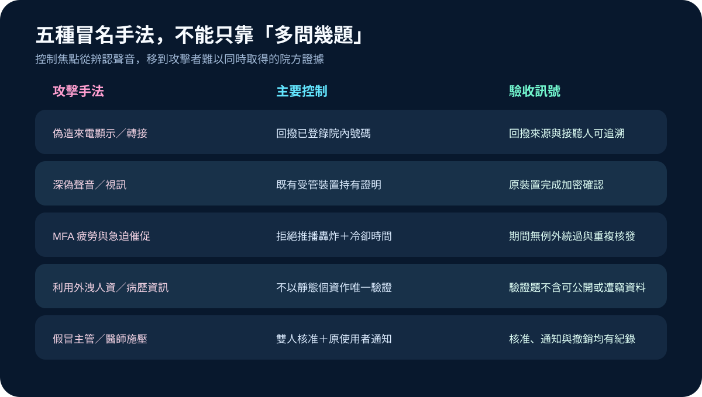

醫療資安國際觀察 · 2026-11-08
醫療服務台如何抵抗深偽冒名：從獨立回撥到高風險帳號復原
作者：Dr. William｜醫療資訊與資安治理實務工作者
醫療服務台面對聲音、視訊與來電顯示時，應把它們視為「提出請求的通道」，而不是足以授權密碼、MFA 或特權帳號重設的身分證明。
名詞解釋：深偽、獨立驗證與帳號復原
深偽是以生成技術模仿聲音、影像或互動外觀。獨立驗證是跳出原請求通道，使用院方既有電話簿、受管裝置、實體識別或核准鏈確認身分。帳號復原包含密碼重設、MFA 重新綁定、帳號解鎖與臨時憑證核發；這些動作可繞過原有驗證，因此風險通常高於一般登入。
國際現況與適用邊界
美國 HHS OCR 於 2026 年 10 月提醒受規範機構評估 AI 驅動社交工程、深偽與自動化攻擊對安全風險分析的影響。HHS HC3 先前也記錄攻擊者利用外洩個資、假冒員工並致電醫療 IT 服務台，誘導重設密碼與 MFA。NIST SP 800-63A-4 則將遠端身分驗證中的注入攻擊、媒體偽造與流程證據納入控制考量。
台灣適用原則：HHS 與 NIST 文件不是台灣醫療機構的法定帳號重設規則。可採用的是獨立回撥、多來源證據、雙人核准、限時權限、原使用者通知與可撤銷設計；實際流程仍須符合台灣法規、院內資安與人事制度、醫療作業需求及契約責任。
規劃：先定義哪些重設動作不能只靠服務台判斷
範圍至少涵蓋特權帳號、遠端存取、電子病歷與醫療設備管理、雲端控制面、供應商帳號及值班緊急帳號。角色應包含服務台、身分管理、資安監控、系統主責、人事、臨床單位與事件指揮。驗收指標可包含獨立驗證覆蓋率、雙人核准率、臨時權限準時到期率、原使用者通知完成時間、異常重設撤銷時間及抽查缺失關閉率。
實作：六階段完成高風險帳號復原
- 請求分級：依帳號能力、臨床影響與替代作業決定驗證強度，急迫情境不得自動降標。
- 跳出原通道：回撥院方既有號碼，或由原受管裝置完成加密確認；拒絕請求者提供的新號碼與新裝置。
- 雙人核准：服務台與主管共同核准，特權帳號再加入系統主責或資安人員。
- 限時復原：優先核發短效、最小權限憑證；高風險 MFA 重新綁定可設定冷卻時間。
- 通知監測：通知原使用者與主管，監測新裝置、異常位置、權限變更與大量資料存取。
- 證據結案：保存請求、驗證、核准、實際變更、通知、到期與撤銷結果。

風險：看起來更像本人，不代表驗證更可靠
常見失敗包括相信來電顯示、把聲紋或視訊外觀當成唯一證據、用可公開或已外洩的靜態個資提問、在急迫壓力下跳過核准，以及重設完成後沒有通知與監測。控制重點應轉向院方掌握的回撥路徑、既有裝置持有證明、雙人核准、冷卻時間、最小權限與可立即撤銷。

可執行清單
- 是否列出不得由單一服務台人員直接重設的高風險帳號？
- 回撥號碼與裝置資料是否取自院方既有系統，而非請求者臨時提供？
- 是否禁止以聲音、視訊、來電顯示或靜態個資作唯一驗證？
- 特權與遠端帳號是否具雙人核准、限時權限與冷卻機制？
- 每次重設是否通知原使用者、主管與必要的監控單位？
- 異常登入或誤重設能否迅速撤銷憑證、隔離會話並啟動調查？
- 工單是否保存驗證來源、核准者、變更內容、通知與結案證據？
來源
- HHS OCR｜October 2026 OCR Cybersecurity Newsletter（發布：2026-10-29；查閱：2026-11-08）
- HHS HC3｜Social Engineering Attacks Targeting IT Help Desks in the Health Sector（發布：2024-04-03；查閱：2026-11-08）
- NIST｜SP 800-63A-4: Identity Proofing and Enrollment（發布：2025-07；查閱：2026-11-08）
內容說明
本文依健康台灣深耕計畫相關治理內容整理，並參考 HHS OCR、HHS HC3 與 NIST 官方資料，說明深偽冒名、服務台驗證與高風險帳號復原控制；不把美國法規或技術指引視為台灣法定要求，也不取代主管機關規範、院內制度、臨床判斷與法律意見。